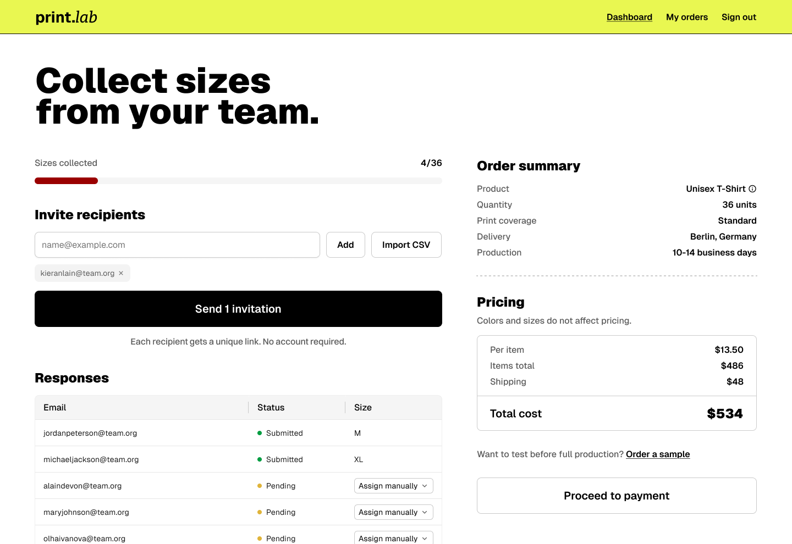
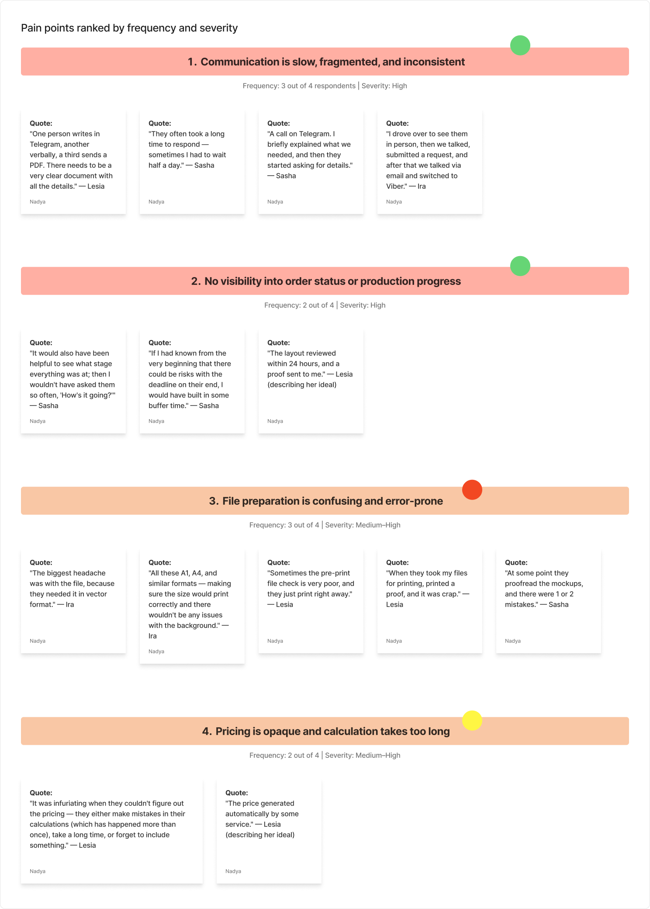
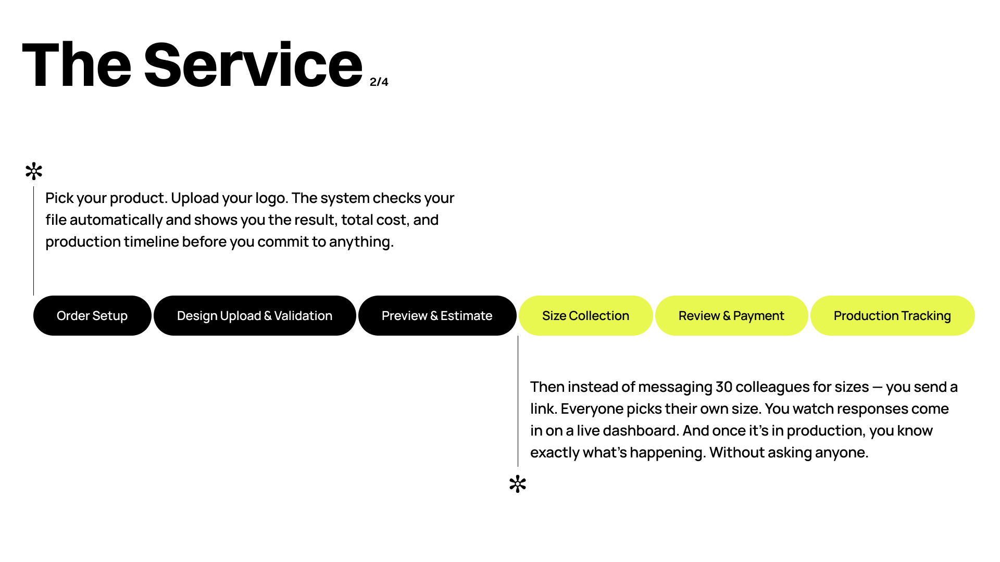
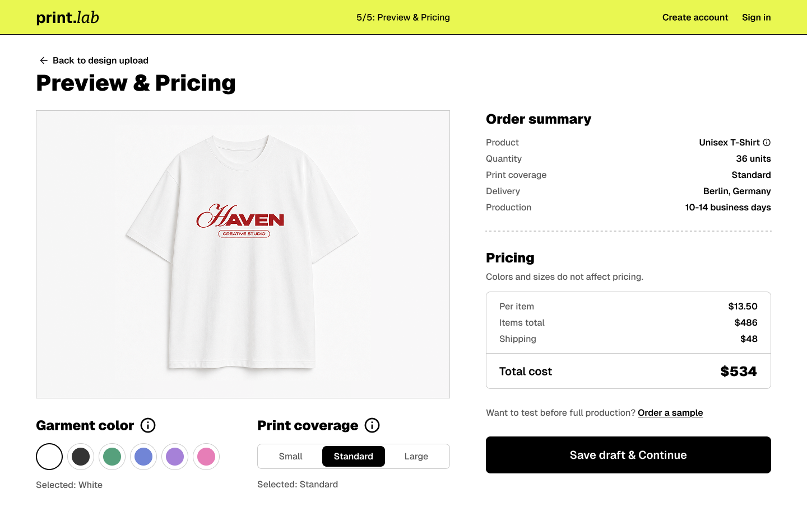
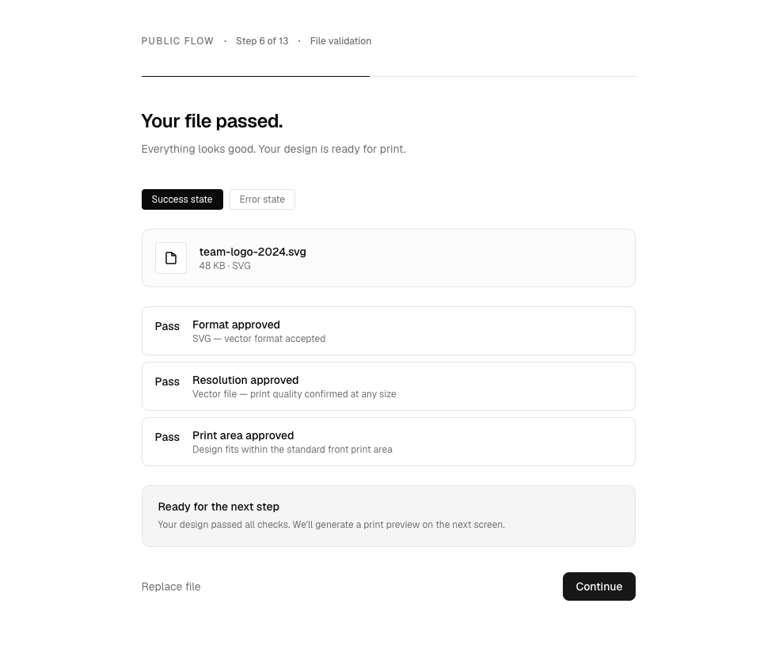
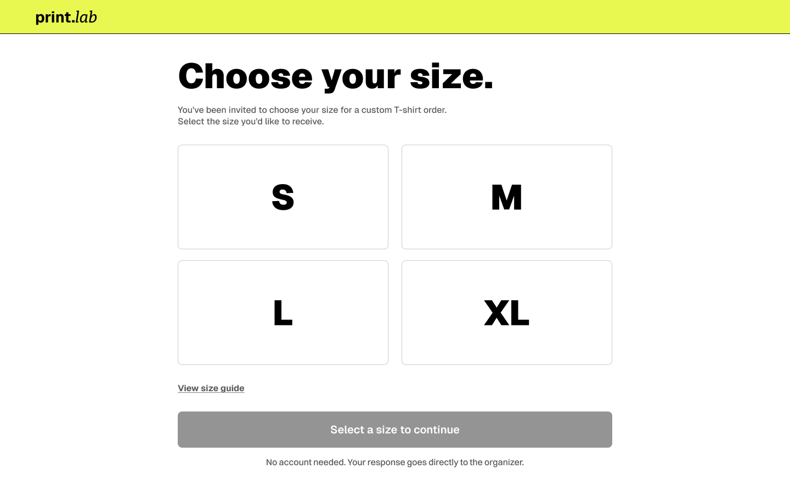
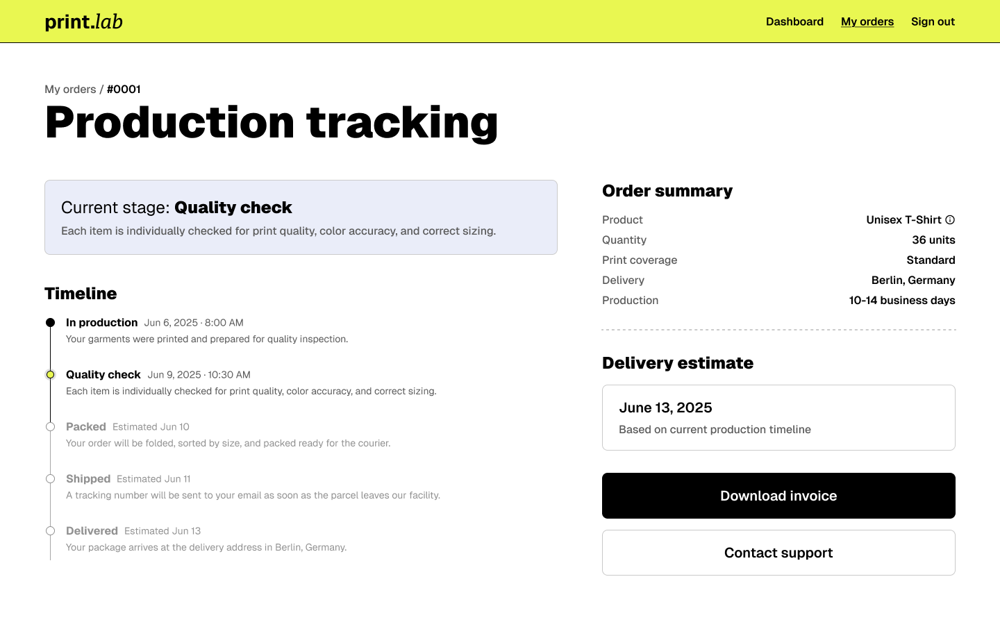

print.lab
Custom merchandise ordering for teams. Design test assignment.

- Constraint
- A design test assignment with no existing product. I had to find the problem, define it and design the solution myself.
- Decision
- Put every step that helps someone decide before any step that asks something of them.
- Trade-off
- I left out the design tools individual buyers asked for, like AI design generation and richer customisation, to focus on the people ordering for whole teams.
- Role
- Sole designer, end to end
- Context
- A company's design test assignment
- Process
- Task analysis, 4 user interviews, market research, persona and customer journey map, user flow, wireframes, key screens
- Outcome
- Passed the test assignment and was invited to the next interview round.
Why this is on the site
My other case studies are enterprise work, where the problem arrives partly defined, research is shared with analysts, and I inherit constraints from systems that already exist. That is the reality of the work and I would not hide it.
This project is the counterweight. I ran the research myself, defined the problem myself, decided what to build and what to leave out, and designed it. It is a concept, not a shipped product, and it is labelled as one.
The problem
My persona, Diana, is an HR manager at a large IT company. To order team apparel, she collects sizes from more than 250 people over Slack, keeps asking the vendor on Telegram for updates, and hopes nothing is wrong with a logo file she didn't know was in the wrong format. Orders take months. The process is chaotic and stressful.
Three things make it painful:
- Collecting sizes. Getting one piece of information from hundreds of people, one conversation at a time.
- Not knowing. No clear cost, timeline or file check until it's too late to change anything.
- Silence. Once the order is with the vendor, the only way to know anything is to ask.
How I got there
I started with a task analysis to understand what ordering merchandise actually involves. Then I ran four user interviews: a freelance designer handling a 70-person order for a client, an IT team lead ordering for a team of 30, and two people ordering for themselves. I also did market research on existing print and merchandise services.
When I ranked the pains, the biggest one surprised me. It wasn't design tools. It was communication: slow, scattered, with no single place for information. One person put it like this: "One person writes in Telegram, another verbally, a third sends a PDF." Next came no visibility into production, and then file problems that were found late and cost a lot to fix. Complaints about dated design tools came last, and only from people ordering for themselves.

Behind almost every complaint was one root cause: print shops work like workshops, not products. Everything is manual, reactive and depends on personal relationships.
That changed the brief. The opportunity wasn't a better design tool. It was replacing the back-and-forth with a clear, self-service flow that still feels personal. So I designed for the organiser, the person ordering for a whole team, and left out the features only individual buyers asked for. Deciding what not to build was as important as deciding what to build.
From there I made the persona and customer journey map, the product concept and feature priorities, then the user flow, wireframes and the key screens in high fidelity.
The product
The service has six stages: order setup, design upload and check, preview and estimate, size collection, review and payment, and production tracking. Four decisions shape it most.

Commitment comes last
The buyer sets up the product, enters quantity and delivery details, uploads the design, checks the preview and sees the full cost and timeline. Only then do they create an account.
Everything that helps someone decide comes before anything that asks something of them.
There's also an option to order a physical sample at cost price. A screen can show a mockup, but it can't show how the print really looks on fabric, and that's worth checking before ordering 250 items.

The file is checked before you commit
When you upload a design, the system checks it straight away. If something's wrong, it tells you exactly what, and you can fix and upload it again. Only a file that passes moves on to the preview.
In Diana's story, the real problem wasn't the wrong file format. It was that nobody noticed until late, after other decisions had already been made. Checking the file at the start turns an expensive late problem into a quick early fix.

Sizes are collected with one link
Instead of messaging 250 people, the organiser sends one link. Each person picks their own size. Answers appear on a live dashboard with a running count, and the organiser can add sizes manually for anyone who hasn't answered.
The key decision: people don't need an account to answer. They open the link, tap a size and they're done. Any extra step for them gets multiplied by 250 and comes back to the organiser as more chasing.
Diana is the one with the problem, but the interface has to be effortless for everyone else.

Production is visible without asking
A timeline shows the current stage, what's already done and the expected dates for what's next, along with a delivery estimate. Email updates go out at each milestone, so the organiser gets updates without having to ask.
If people have to chase the vendor for updates, that's a design problem. The system already has the status, so it should show it.

How I'd measure success
The main metric is organiser hours spent per order. Chasing sizes, guessing the cost and chasing the vendor all take the organiser's time. If that number goes down, the platform can grow without adding support staff.
There's also one metric for each of the three problems:
- Collecting sizes: how many people submit a size without being chased, and how long it takes to get every size after sending the link.
- Not knowing: how many orders see the cost and timeline before creating an account, and how early bad files are caught.
- Silence: how many orders finish without the organiser contacting support or the vendor for an update.